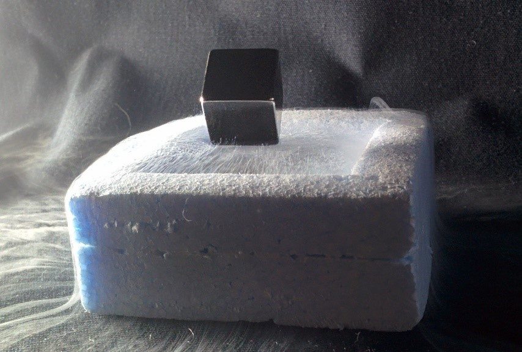

How Quantum Levitation Works?
22 November, 2019

L0 Series on SCMaglev test track in Yamanashi Prefecture, Japan
Some videos on the internet show something called "quantum levitation." What is this? How does it work? Will we be able to have flying cars?
Quantum levitation as it is called is a process where scientists use the properties of quantum physics to levitate an object (specifically, a superconductor) over a magnetic source (specifically a quantum levitation track designed for this purpose).
The Science of Quantum Levitation
The reason this works is something called the Meissner effect and magnetic flux pinning. The Meissner effect dictates that a superconductor in a magnetic field will always expel the magnetic field inside of it, and thus bend the magnetic field around it. The problem is a matter of equilibrium. If you just placed a superconductor on top of a magnet, then the superconductor would just float off the magnet, sort of like trying to balance two south magnetic poles of bar magnets against each other.
The quantum levitation process becomes far more intriguing through the process of flux pinning, or quantum locking, as described by Tel Aviv University superconductor group in this way:
Superconductivity and magnetic field [sic] do not like each other. When possible, the superconductor will expel all the magnetic field from inside. This is the Meissner effect. In our case, since the superconductor is extremely thin, the magnetic field DOES penetrate. However, it does that in discrete quantities (this is quantum physics after all! ) called flux tubes. Inside each magnetic flux tube superconductivity is locally destroyed. The superconductor will try to keep the magnetic tubes pinned in weak areas (e.g. grain boundaries). Any spatial movement of the superconductor will cause the flux tubes to move. In order to prevent that the superconductor remains "trapped" in mid-air. The terms "quantum levitation" and "quantum locking" were coined for this process by Tel Aviv University physicist Guy Deutscher, one of the lead researchers in this field.
The Meissner Effect
Let's think about what a superconductor really is: it's a material in which electrons are able to flow very easily. Electrons flow through superconductors with no resistance, so that when magnetic fields get close to a superconducting material, the superconductor forms small currents on its surface, cancelling out the incoming magnetic field. The result is that the magnetic field intensity inside of the surface of the superconductor is precisely zero. If you mapped the net magnetic field lines it would show that they're bending around the object.
But how does this make it levitate?
When a superconductor is placed on a magnetic track, the effect is that the superconductor remains above the track, essentially being pushed away by the strong magnetic field right at the track's surface. There is a limit to how far above the track it can be pushed, of course, since the power of the magnetic repulsion has to counteract the force of gravity.
A disk of a type-I superconductor will demonstrate the Meissner effect in its most extreme version, which is called "perfect diamagnetism," and will not contain any magnetic fields inside the material. It'll levitate, as it tries to avoid any contact with the magnetic field. The problem with this is that the levitation isn't stable. The levitating object won't normally stay in place. (This same process has been able to levitate superconductors within a concave, bowl-shaped lead magnet, in which the magnetism is pushing equally on all sides.)
In order to be useful, the levitation needs to be a bit more stable. That's where quantum locking comes into play.

Flux Tubes
One of the key elements of the quantum locking process is the existence of these flux tubes, called a "vortex". If a superconductor is very thin, or if the superconductor is a type-II superconductor, it costs the superconductor less energy to allow some of the magnetic field to penetrate the superconductor. That's why the flux vortices form, in regions where the magnetic field is able to, in effect, "slip through" the superconductor.
In the case described by the Tel Aviv team above, they were able to grow a special thin ceramic film over the surface of a wafer. When cooled, this ceramic material is a type-II superconductor. Because it's so thin, the diamagnetism exhibited isn't perfect ... allowing for the creation of these flux vortices passing through the material.
Flux vortices can also form in type-II superconductors, even if the superconductor material isn't quite so thin. The type-II superconductor can be designed to enhance this effect, called "enhanced flux pinning."
Quantum Locking
When the field penetrates into the superconductor in the form of a flux tube, it essentially turns off the superconductor in that narrow region. Picture each tube as a tiny non-superconductor region within the middle of the superconductor. If the superconductor moves, the flux vortices will move. Remember two things, though:
The flux vortices are magnetic fields
The superconductor will create currents to counter magnetic fields (i.e. the Meissner effect)

The very superconductor material itself will create a force to inhibit any sort of motion in relation to the magnetic field. If you tilt the superconductor, for example, you will "lock" or "trap" it into that position. It'll go around a whole track with the same tilt angle. This process of locking the superconductor in place by height and orientation reduces any undesirable wobble (and is also visually impressive, as shown by Tel Aviv University).
You're able to re-orient the superconductor within the magnetic field because your hand can apply far more force and energy than what the field is exerting.
Other Types of Quantum Levitation
The process of quantum levitation described above is based on magnetic repulsion, but there are other methods of quantum levitation that have been proposed, including some based on the Casimir effect. Again, this involves some curious manipulation of the electromagnetic properties of the material, so it remains to be seen how practical it is.
The Future of Quantum Levitation
Unfortunately, the current intensity of this effect is such that we won't have flying cars for quite some time. Also, it only works over a strong magnetic field, meaning that we'd need to build new magnetic track roads. However, there are already magnetic levitation trains in Asia which use this process, in addition to the more traditional electromagnetic levitation (maglev) trains.
Another useful application is the creation of truly frictionless bearings. The bearing would be able to rotate, but it would be suspended without direct physical contact with the surrounding housing so that there wouldn't be any friction. There will certainly be some industrial applications for this, and we'll keep our eyes open for when they hit the news.
Some other innovative projects that could be undertaken in this field could be:
- Floating Cities
- Space Launch System
Our planet can be a crowded, polluted, crazy place. But a new design concept proposes that we rise above it all, literally, by moving to a magnetically levitated island in the sky, complete with green forests, mountains, and urban centres.
For years, NASA has been researching the possibility of using the high speeds of maglev transportation to fling spacecraft into low Earth orbit. Magnets could allow a spacecraft traveling along the track to reach speeds around 18,000 miles per hour, enough to plunge it into space.